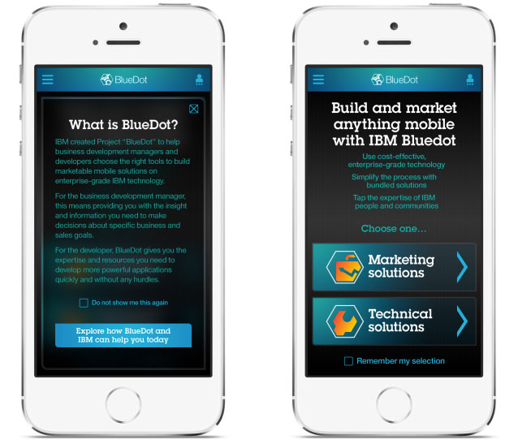
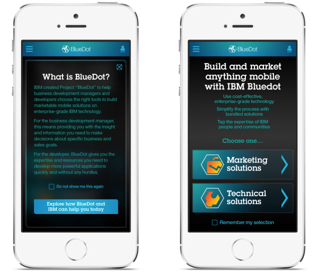

IBM Watson · Cloud Services
IBM Cloud Services
Designing support tools and mobile apps for IBM's Bluemix cloud platform in collaboration with the Watson team.
IBM Cloud Services
As an Experience Director I worked on several IBM projects. One of the most interesting was a project internally called BlueDot — a support mobile app designed to help business users navigate IBM cloud services, especially the tool called Bluemix. The project quickly extended to additional devices and features, and was done together with the IBM Watson team.
 

Working with IBM Agile
IBM had its own special agile flavor. Most decisions were made by the team and sketched on whiteboards. Those sketches were later photographed and annotated and served as working documentation. In this way we could work fast and reach consensus quickly, saving a lot of time and budget on producing formal documentation. Most effort was put towards making a working prototype.
Styling with CSS
To save time we defined a number of styles that could be applied to the prototype being built. This required close collaboration between programmers and designers from very early stages. By applying different CSS to a prototype in progress, we could test early and get feedback from stakeholders and users. Any required changes were applied on the fly.